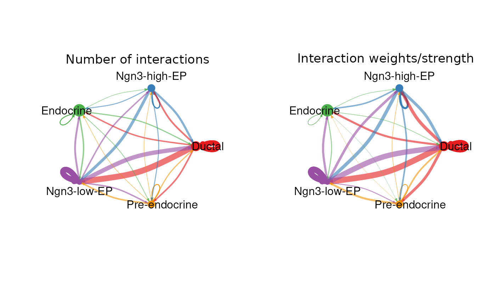
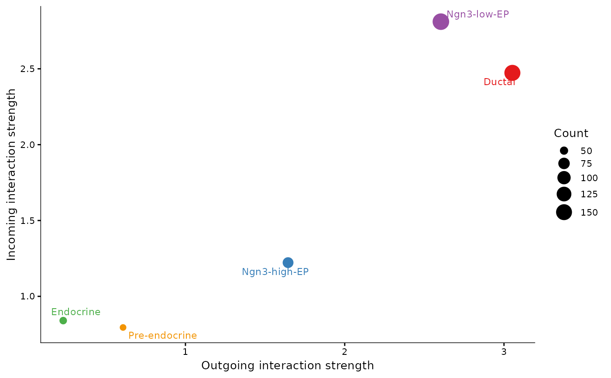

RunCellChat performs CellChat analysis on a Seurat object to investigate cell-to-cell communication. The results are stored in the Seurat object and can be visualized using CellChatPlot.
Usage
RunCellChat(
srt,
group.by,
species = c("Homo_sapiens", "Mus_musculus", "zebrafish"),
split.by = NULL,
annotation_selected = NULL,
group_column = NULL,
group_cmp = NULL,
thresh = 0.05,
min.cells = 10,
verbose = TRUE
)Arguments
- srt
A Seurat object.
- group.by
Name of one or more meta.data columns to group (color) cells by.
- species
The species of the data, either 'human', 'mouse' or 'zebrafish'.
- split.by
Name of a column in meta.data column to split plot by. Default is
NULL.- annotation_selected
A vector of cell annotations of interest for running the CellChat analysis. If not provided, all cell types will be considered.
- group_column
Name of the metadata column in the Seurat object that defines conditions or groups.
- group_cmp
A list of pairwise condition comparisons for differential CellChat analysis.
- thresh
The threshold for computing centrality scores.
- min.cells
the minmum number of expressed cells required for the genes that are considered for cell-cell communication analysis.
- verbose
Whether to print the message. Default is
TRUE.
Examples
data(pancreas_sub)
pancreas_sub <- standard_scop(pancreas_sub)
pancreas_sub <- RunCellChat(
pancreas_sub,
group.by = "CellType",
species = "Mus_musculus"
)
#> Registered S3 method overwritten by 'ggnetwork':
#> method from
#> fortify.igraph ggtree
#> [1] "Create a CellChat object from a data matrix"
#> Set cell identities for the new CellChat object
#> The cell groups used for CellChat analysis are Ductal, Ngn3-high-EP, Endocrine, Ngn3-low-EP, Pre-endocrine
#> The number of highly variable ligand-receptor pairs used for signaling inference is 841
#> triMean is used for calculating the average gene expression per cell group.
#> [1] ">>> Run CellChat on sc/snRNA-seq data <<< [2026-01-20 07:40:04.010883]"
#> [1] ">>> CellChat inference is done. Parameter values are stored in `object@options$parameter` <<< [2026-01-20 07:41:13.561644]"
CellChatPlot(pancreas_sub)

#> Signaling role analysis on the aggregated cell-cell communication network from all signaling pathways
